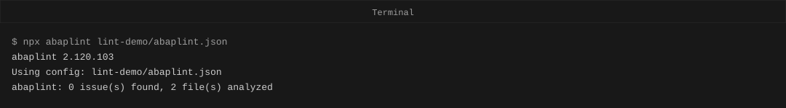
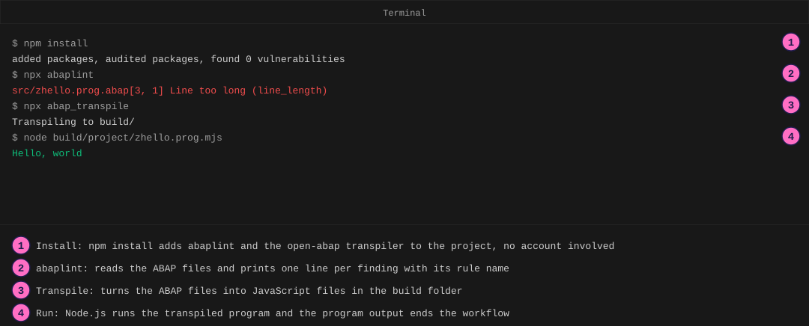
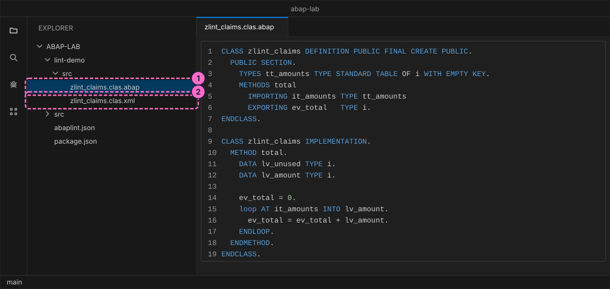
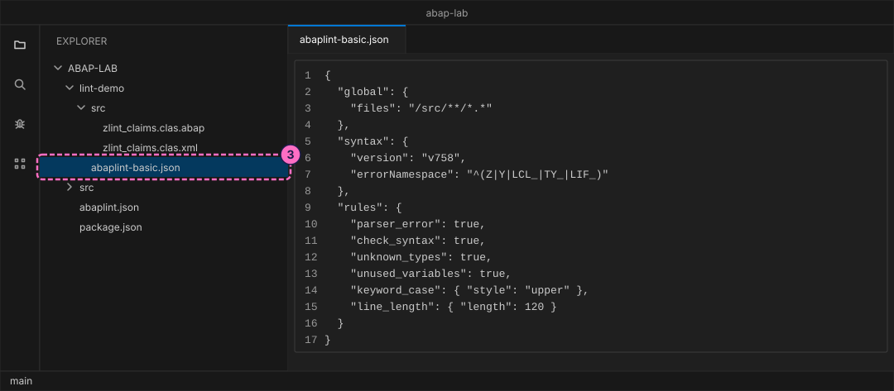
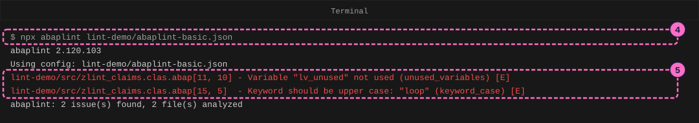
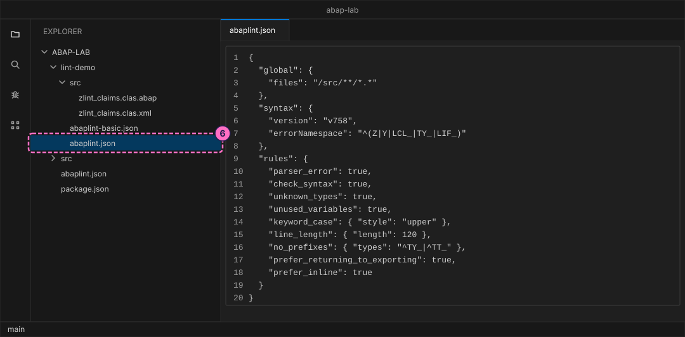
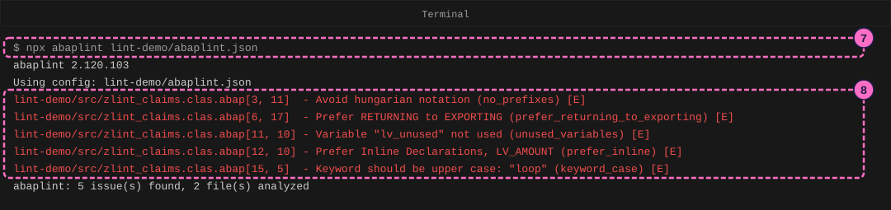
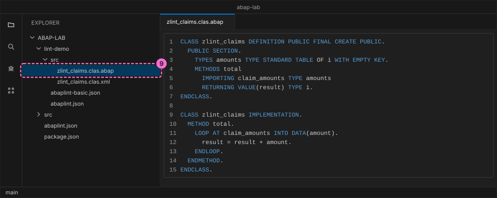

ABAP Guide: Check Code against Clean ABAP Rules
|
This content was generated with the assistance of AI and should be verified against the official documentation before being relied on in production. |
Checked on 2026-11-13 against abaplint 2.120.103 and Node.js 24.21.
What you build
You check one small ABAP class, zlint_claims, that adds up claim amounts and was written with several bad habits on purpose. First you run abaplint, an open-source static checker for ABAP, with a short configuration of six rules and read its two findings. Then you add three rules that follow SAP’s Clean ABAP style guide, read five findings, and fix the class until the checker reports none. A finding tells you the file, the line and column, what is wrong, and the key of the rule that found it, so you can look the rule up.
abaplint is a community project, not SAP software. It reads ABAP source files without an SAP system and applies the rules you switch on. It is not the ABAP Test Cockpit (ATC) of an SAP system and does not replace it: a clean abaplint run says nothing about ATC. The section Where abaplint fits next to ATC below explains the difference. The ATC checks themselves run only on an SAP system and are not run here.

Before you start
-
No account is needed: abaplint installs from the public npm registry without signing in, and it runs on your computer. The licence (MIT) is listed in the README of the ABAP lab.
-
Set up the lab first, with the guide Set Up a Local ABAP Playground: the folder
abap-labwithnpm installdone, and an editor such as Visual Studio Code open on it. The toolnpx abaplintcomes with that install. -
It helps to have written a first class, as in Your First ABAP Program, which also shows one abaplint finding. The words class, method and parameter are explained in Programming Concepts for Newcomers.
-
The lab already holds the finished files of this guide in
modules/ROOT/examples/abap-lab/lint-demo/. Type them yourself rather than copying them. They live in their own folder,lint-demo, with their own configuration files, so the deliberate findings never appear when you runnpm run lintornpm testof the lab. -
The figures are drawings of the editor and the terminal, not screenshots. A highlighted box with a number marks the file or the lines of the step with the same number. A figure leaves out the three version lines (
ABAP release,ABAP language versionand the like) and the blank lines that the tool prints afterUsing config.
Steps

This map shows the whole terminal workflow of the ABAP lab: install the tools, check the code with abaplint, transpile it and run it. This guide works in the second region, the abaplint check.
Write the code to check
abaplint finds objects by the file layout of abapGit, as in the first guide: a class is a .clas.abap file with the source and a .clas.xml file with its attributes.
-
In the lab folder, create the folder
lint-demowith a foldersrcinside it, and insrcthe filelint-demo/src/zlint_claims.clas.abap. The class has one method,total, which adds up a table of amounts. The code runs, but it has habits that a style guide discourages: names with type prefixes (tt_,it_,ev_,lv_), a result returned through anEXPORTINGparameter, a variable that is never used, a variable declared in advance, and a keyword written in lowercase.CLASS zlint_claims DEFINITION PUBLIC FINAL CREATE PUBLIC. PUBLIC SECTION. TYPES tt_amounts TYPE STANDARD TABLE OF i WITH EMPTY KEY. METHODS total IMPORTING it_amounts TYPE tt_amounts EXPORTING ev_total TYPE i. ENDCLASS. CLASS zlint_claims IMPLEMENTATION. METHOD total. DATA lv_unused TYPE i. DATA lv_amount TYPE i. ev_total = 0. loop AT it_amounts INTO lv_amount. ev_total = ev_total + lv_amount. ENDLOOP. ENDMETHOD. ENDCLASS. -
Create the attribute file
lint-demo/src/zlint_claims.clas.xmlnext to it:<?xml version="1.0" encoding="utf-8"?> <abapGit version="v1.0.0" serializer="LCL_OBJECT_CLAS" serializer_version="v1.0.0"> <asx:abap xmlns:asx="http://www.sap.com/abapxml" version="1.0"> <asx:values> <VSEOCLASS> <CLSNAME>ZLINT_CLAIMS</CLSNAME> <LANGU>E</LANGU> <DESCRIPT>Claim totals</DESCRIPT> <STATE>1</STATE> <FIXPT>X</FIXPT> <UNICODE>X</UNICODE> </VSEOCLASS> </asx:values> </asx:abap> </abapGit>
Run abaplint with a short configuration
abaplint runs only the rules named in its configuration file. A configuration without a rules section switches nothing on.
-
Create
lint-demo/abaplint-basic.json. Theglobalsection says where the ABAP files are: the pattern"/src/**/*.*"is relative to the folder of the configuration file, so it means every file underlint-demo/src. Thesyntaxsection names the ABAP release to check against (v758) and which names belong to your own code (errorNamespace). Each entry ofrulesis a rule key withtrue(switch on with the defaults) or with settings:keyword_casewith the styleupperwants keywords in capitals, andline_lengthallows 120 characters per line.{ "global": { "files": "/src/**/*.*" }, "syntax": { "version": "v758", "errorNamespace": "^(Z|Y|LCL_|TY_|LIF_)" }, "rules": { "parser_error": true, "check_syntax": true, "unknown_types": true, "unused_variables": true, "keyword_case": { "style": "upper" }, "line_length": { "length": 120 } } }
-
In the terminal, in the
abap-labfolder, run abaplint and tell it which configuration to use:npx abaplint lint-demo/abaplint-basic.json -
Read the output. The tool prints its version and the configuration it used, then one line per finding, then a summary. A finding has the form
file[line, column] - message (rule) [severity]. Here[11, 10]is line 11, column 10, where the namelv_unusedstarts. The rule key in brackets,unused_variables, is what to search for on the abaplint rules site, and[E]means error. The second finding is the keywordloopin lowercase, found bykeyword_case. The other four rules of the file,parser_error,check_syntax,unknown_typesandline_length, found nothing.lint-demo/src/zlint_claims.clas.abap[11, 10] - Variable "lv_unused" not used (unused_variables) [E] lint-demo/src/zlint_claims.clas.abap[15, 5] - Keyword should be upper case: "loop" (keyword_case) [E] abaplint: 2 issue(s) found, 2 file(s) analyzed
Add the Clean ABAP rules and read the findings
The first two findings are about plain tidiness. The Clean ABAP style guide asks for more, and abaplint has rules for several of its recommendations. The style guide names the checkers for its rules in its section How to Check Automatically.
-
Create
lint-demo/abaplint.jsonas a copy of the basic file with three more rules at the end:no_prefixes(Clean ABAP: avoid encodings, especially Hungarian notation and prefixes),prefer_returning_to_exporting(Clean ABAP: prefer RETURNING to EXPORTING) andprefer_inline(Clean ABAP: prefer inline to up-front declarations). The setting{ "types": "^TY_|^TT_" }ofno_prefixesis a regular expression for the type names whose prefix is reported, herety_andtt_.{ "global": { "files": "/src/**/*.*" }, "syntax": { "version": "v758", "errorNamespace": "^(Z|Y|LCL_|TY_|LIF_)" }, "rules": { "parser_error": true, "check_syntax": true, "unknown_types": true, "unused_variables": true, "keyword_case": { "style": "upper" }, "line_length": { "length": 120 }, "no_prefixes": { "types": "^TY_|^TT_" }, "prefer_returning_to_exporting": true, "prefer_inline": true } }
-
Run abaplint with the new file:
npx abaplint lint-demo/abaplint.json -
Read the five findings. The two from before are still there, and three are new.
no_prefixesreports the type namett_amountsin line 3 (message: Avoid hungarian notation); in this run it did not report the prefixesit_,ev_andlv_of the other names, because this configuration sets only thetypesoption.prefer_returning_to_exportingpoints at line 6, column 17, the parameterev_total: the style guide prefers a method that returns its result withRETURNING, because the caller can then use the call inside an expression.prefer_inlinepoints at line 12 and the variablelv_amount, which can be declared where it is first used.lint-demo/src/zlint_claims.clas.abap[3, 11] - Avoid hungarian notation (no_prefixes) [E] lint-demo/src/zlint_claims.clas.abap[6, 17] - Prefer RETURNING to EXPORTING (prefer_returning_to_exporting) [E] lint-demo/src/zlint_claims.clas.abap[11, 10] - Variable "lv_unused" not used (unused_variables) [E] lint-demo/src/zlint_claims.clas.abap[12, 10] - Prefer Inline Declarations, LV_AMOUNT (prefer_inline) [E] lint-demo/src/zlint_claims.clas.abap[15, 5] - Keyword should be upper case: "loop" (keyword_case) [E] abaplint: 5 issue(s) found, 2 file(s) analyzedThe rule
keyword_caseis a team rule, not a rule of Clean ABAP: the style guide gives no clear guidance on the case of keywords and asks teams to agree on one. This guide chose capitals, as the lab does.
Fix the findings
-
Replace the content of
lint-demo/src/zlint_claims.clas.abapwith the fixed class below. Each finding has a fix: the type is nowamountsand the parameters have names without prefixes (no_prefixes);totalreturns its result withRETURNING VALUE(result)and starts from the initial value zero, so the lineev_total = 0.is gone (prefer_returning_to_exporting); the unused variable is deleted (unused_variables);DATA(amount)declares the loop variable inline (prefer_inline); andLOOPis in capitals (keyword_case). Changing a method fromEXPORTINGtoRETURNINGchanges how it is called, so in a real project you change every caller too; this lab class has none.CLASS zlint_claims DEFINITION PUBLIC FINAL CREATE PUBLIC. PUBLIC SECTION. TYPES amounts TYPE STANDARD TABLE OF i WITH EMPTY KEY. METHODS total IMPORTING claim_amounts TYPE amounts RETURNING VALUE(result) TYPE i. ENDCLASS. CLASS zlint_claims IMPLEMENTATION. METHOD total. LOOP AT claim_amounts INTO DATA(amount). result = result + amount. ENDLOOP. ENDMETHOD. ENDCLASS.Source: Clean ABAP: Prefer inline to up-front declarations and Clean ABAP: Prefer RETURNING to EXPORTING

-
Save the file and run the check again. Nothing is reported:
npx abaplint lint-demo/abaplint.jsonabaplint: 0 issue(s) found, 2 file(s) analyzed
Check the result
npx abaplint lint-demo/abaplint.json prints abaplint: 0 issue(s) found, 2 file(s) analyzed. In a shell on macOS or Linux, echo $? right after the command prints 0 when there are no findings and 1 when there are some, which is what a build job checks to fail a build. The lab’s own npm run lint still prints abaplint: 0 issue(s) found, 10 file(s) analyzed, because its configuration reads only the folder src of the lab, and npm test still passes.
Variations
-
Switch on one more rule of the abaplint list, add its key to the
rulessection oflint-demo/abaplint.jsonwith the valuetrueand run again. Take the key from the abaplint rules page. -
Put the flawed class back (from step 1) and change the style of
keyword_casefromuppertolower. The capitals ofCLASS,PUBLIC,METHODSand the other keywords are now the findings, for exampleKeyword should be lower case: "CLASS"in line 1. -
With the flawed class and the length setting of
line_lengthchanged from 120 to 40, three more findings appear, such asReduce line length to max 40, currently 57 (line_length)for line 1.
What can go wrong
| Symptom | Cause | Fix |
|---|---|---|
|
The |
Correct the pattern in the |
|
You ran |
Give the path: |
|
The configuration file name is misspelled or its folder is wrong, so abaplint fell back to its default settings and checked the lab’s |
Check the path and the file name, for example |
One finding you expect is missing, and no message says why |
A rule key in |
Compare the key with the one on the abaplint rules page and with the key in the finding line. |
|
The configuration has no |
Add the rules you want: the tool does not switch any on by itself. |
Where abaplint fits next to ATC
On an SAP system, code is checked with the ABAP Test Cockpit (ATC), which runs check variants chosen by the system administrators, for example the checks for ABAP Cloud readiness, inside the system, with its knowledge of what is released there. abaplint works the other way round: it reads serialized source files in a folder or a Git repository, has its own rules with their own keys and settings, and needs no system. The same cycle applies to both: run the check, read the findings, fix or justify them, run again. Use abaplint for fast feedback while you write and in a build job; use ATC for the checks that need the system. The ATC checks cannot be run in the lab and are not shown here; read ATC and Code Inspector for how they work, and Coding Standards and Clean ABAP for the style guide behind the rules used above.
Where to go next
-
Previous guide: Write ABAP Unit Tests.
-
Reference: Coding Standards and Clean ABAP, which runs a larger set of rules.
-
Reference: ATC and Code Inspector.